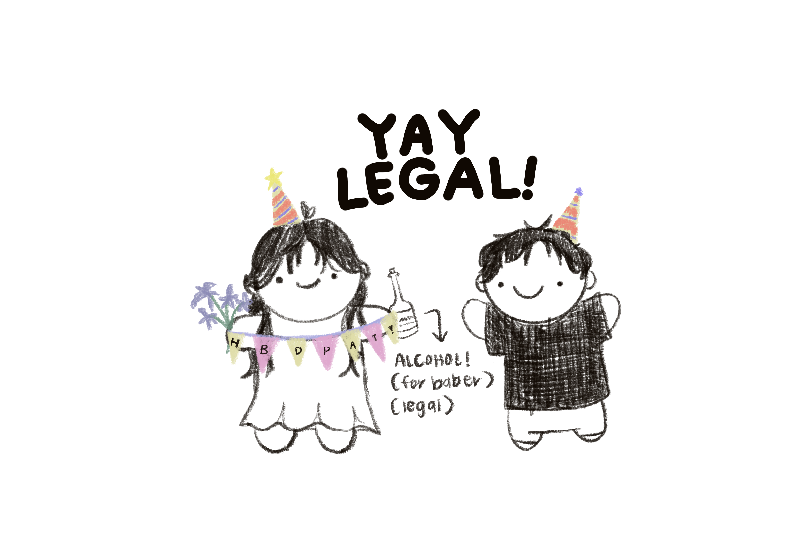

i lov you bb
HAI MY BABY LOV BABER MWAH! Happy happiest 21st to my lovie.
hi my lovely pat baberrrr I love you endlessly and am so so happy I get the chance to every day. You are so so kind, loving, silly, and caring and I couldn't be happier to be with you. I know I’ve only known you a couple months BUT even if you don’t believe you are any of those things I know you are and you take my word for it because you are my sweet boy and I love you so much and you are my favorite. It has been the joy of my life getting to spend time with you and to just be with you. I keep remembering one of my favorite moments with you as of late and it was when we pinky promised over something in the cafe hehe (I don’t remember what the promise was, maybe about me still talking to you while was in Australia lol). But the contents of the promise aren’t important (maybe it is oopsie)…but the point I’m trying to make is the feeling I had. In that moment, I felt like being your friend was the best thing I could have ever done ever because of how happy I felt. I just looked at your smile and then I felt ten times happier. Even though we are apart, that feeling of sharing a moment with you still brings me so much joy. In the spirit of being mushy (and in the spirit of Project Hail Mary,) you know how humans are all made of stardust? You are my star (fruit) and you are always there to remind me I always have someone that loves me (and level up my max energy). I am always so grateful to you for having someone to laugh or cry with. I know you’ll be able to do amazing amazing things this year and beyond. You always have someone in your corner for whatever you need. I believe in you, am so so proud of you and I love you always! I can’t wait to see you again so soon, give you all the kisses in the whole wide world, play unlimited stardew valley, and make endless pinky promises with you. (please buy me a penjamin with your well-earned year :3 (IN GAME) hehe jk IM JOKING) iiiii loveee i loveeee i love i love i lob!